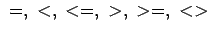

Wichtige Operatoren sind als die bekannten arithmetischen Operationen;
 als relationale Operatoren und := als Zuweisungsoperator. Von spezieller Bedeutung ist der -Operator, der abgekürzt in Infixform auch als || geschrieben wird. Mit diesem Operator können Symbole (Namen) und/oder Strings miteinander verknüpft werden. Es gilt:
| (20.38a) |
| (20.38b) |
Die Verknüpfung liefert also ein Resultat, welches den Typ des ersten Arguments übernimmt. Entsprechendes gilt für die Infixform ||: der Operand links vom Operator bestimmt den Typ des Resultats:
| (20.39) |
Mit dem Verknüpfungsoperator lassen sich Folgen von Symbolen erzeugen.
| Beispiel |
|
|